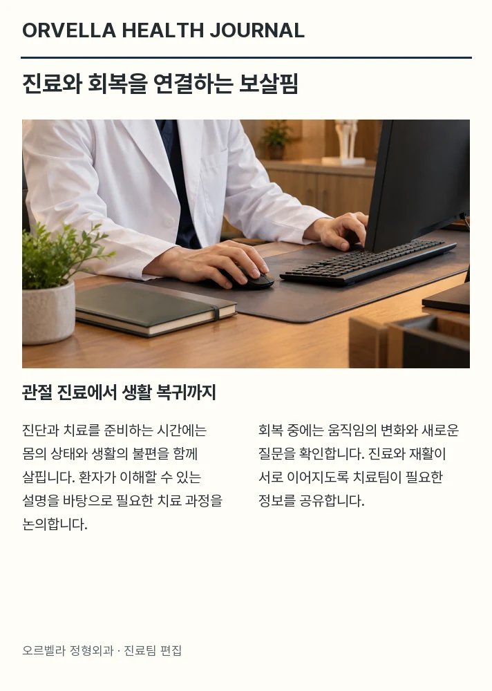
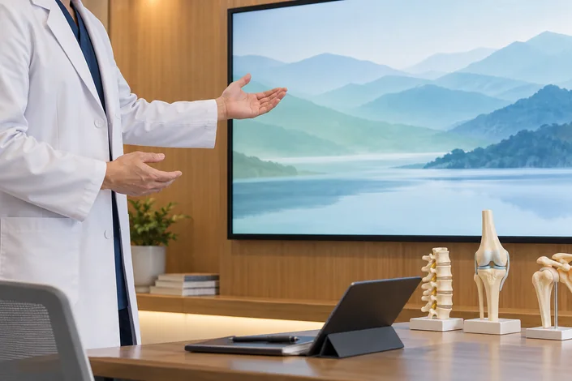

언론 보도부터 병원 소식까지
오르벨라 정형외과의 다양한 이야기를 전합니다.
환자의 일상을 생각하는 진료, 오르벨라 정형외과는 치료 계획을 세울 때 내과, 정형외과, 재활 분야가
필요한 정보를 나누도록 합니다. 진료는 설명과 질문 확인을 통해 이해를 돕는 과정입니다.
치료 후의 생활을 함께 살피는 오르벨라의 돌봄 원칙에 따라, 환자별 상태와 생활 여건을 고려하여 관절 치료의 방향을 정합니다.
내과·가정의학·영상검사 – 정형외과 – 재활·통증 관리 분야의 담당자가 상태를 함께 확인하며
치료와 회복 단계가 서로 단절되지 않도록 진료 정보를 공유합니다.
오르벨라의 회복 진료 [정형외과·재활센터]에서는 각 진료 분야의 담당자가 회복 과정을 함께 살피고, 병동과 외래가 필요한 정보를 나눕니다.
환자 한 분의 상태를 확인할 때에도, 이를 위해 진찰과 검사 결과를 설명하고 운동과 일상의 변화를 함께 듣습니다.
대표원장 김도윤은 관절 진료에서 충분한 설명과 환자의 이해가 치료 선택의 바탕이 되어야 한다고 생각합니다.
진료팀은 수술이 필요한지 검토한 뒤에도 회복 과정의 생활까지 함께 살피는 것을 진료의 방향으로 삼습니다.
의료진이 함께 지킬 원칙도 이와 같습니다. "불편한 증상을 살피는 일에서 더 나아가, 치료를 받는 분의 생활과 목표를 이해하려 합니다.
수술이 필요한 경우에도 이후의 재활과 일상 복귀 계획을 함께 설명하겠습니다."

